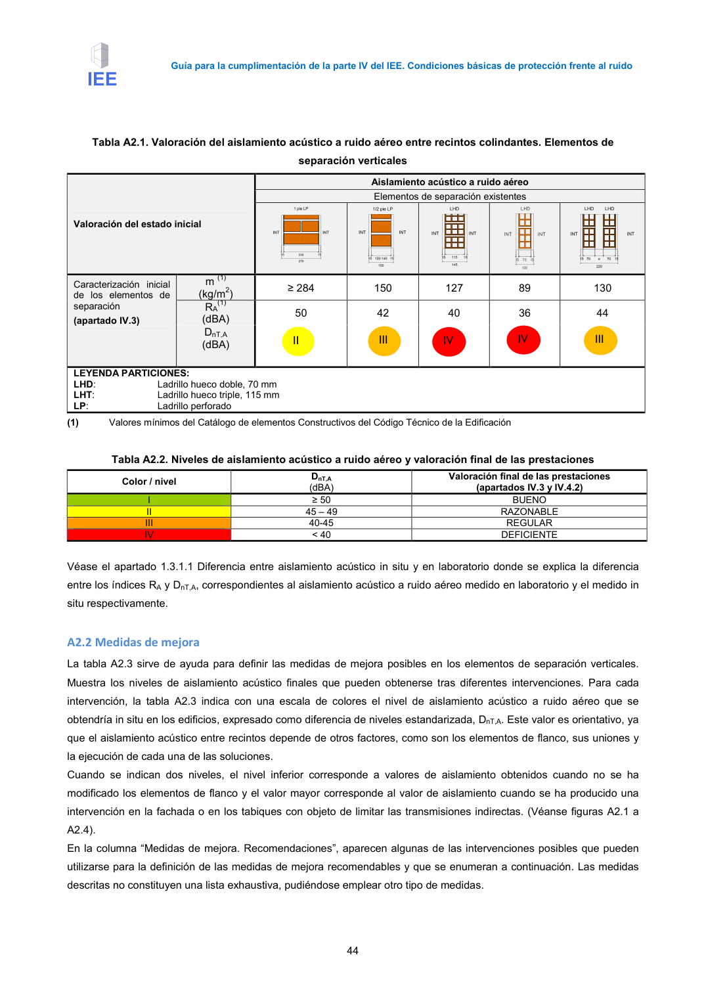

IEE 2016 · edición 2016-11-01 · capa guia
Documento GUIA-PDF-a5d4ef5252ba · SHA-256 del PDF 813669d3066c0ff79457d57b80b0512a4fbb248bc5db1f7baf473c369a064738
Página física 54 de 65.
Copia fiel del PDF fuente · Fuente oficial
Ficha de la disposición en la fuente oficial
Créditos y autoría en el PDF fuente. Reproducción con cita de fuente y autores.
Permiso literal: Se permite la reproducción del contenido total o parcial de esta Guía siempre y cuando se haga citando la fuente original.
Guía para la cumplimentación de la parte IV del IEE. Condiciones básicas de protección frente al ruido
Dirección y coordinación
Luis Vega Catalán
Mª Cristina Colomo Fernández
Eduardo González de Prado
Dirección General de Arquitectura, Vivienda y Suelo. Ministerio de Fomento
Mª Teresa Carrascal García
Instituto de Ciencias de la Construcción Eduardo Torroja. IETcc- CSIC
Autores
Mª Teresa Carrascal García
Amelia Romero Fernández
Mª Belén Casla Herguedas
Unidad de Calidad en la Construcción del Instituto de Ciencias de la Construcción Eduardo Torroja IETcc- CSIC
Se agradece la colaboración de
Belén Delgado Giménez
Fundación FIDAS
Alberto Esteban González
C.T.O. Estudios y proyectos – Gikesa
Giovanni Muzio
C.T.O. Estudios y proyectos
Francisco Labastida Azemar
Arquitecto, asesor CSCAE
Pedro F. Nogueira López
Universidad de A Coruña
Alejandro Sansegundo Sierra
Acústica SanSegundo
Esta Guía para la cumplimentación de la parte IV del IEE. Condiciones básicas de protección frente al ruido, nace en el marco del
convenio de colaboración llevado a cabo entre el Ministerio de Fomento y el Instituto de Ciencias de la Construcción Eduardo Torroja y
forma parte de la estrategia de este Ministerio de generar una serie de documentos de ayuda que faciliten la aplicación de la normativa
de la edificación y que en este caso concreto, ofrezca a los técnicos criterios para poder realizar una evaluación del estado inicial de las
edificaciones en lo referente a las condiciones acústicas de las viviendas existentes y plantear medidas que incrementen su confort
acústico.
En la redacción de este documento se ha utilizado algunos de los contenidos y de las figuras de la Guía de aplicación del DB HR
Protección frente al ruido. Dicha guía puede consultarse en:
http://www.codigotecnico.org/index.php/menu-documentos-complementarios/menu-guia-aplicacion-db-hr
Se permite la reproducción del contenido total o parcial de esta Guía siempre y cuando se haga citando la fuente original.
2Formato: Texto de la página (Markdown)
Guía para la cumplimentación de la parte IV del IEE. Condiciones básicas de protección frente al ruido 44 Tabla A2.1. Valoración del aislamiento acústico a ruido aéreo entre recintos colindantes. Elementos de separación verticales Valoración del estado inicial Aislamiento acústico a ruido aéreo Elementos de separación existentes Caracterización inicial de los elementos de separación (apartado IV.3) m (1) (kg/m2) ≥ 284 150 127 89 130 RA (1) (dBA) 50 42 40 36 44 DnT,A (dBA) LEYENDA PARTICIONES: LHD: Ladrillo hueco doble, 70 mm LHT: Ladrillo hueco triple, 115 mm LP: Ladrillo perforado (1) Valores mínimos del Catálogo de elementos Constructivos del Código Técnico de la Edificación Tabla A2.2. Niveles de aislamiento acústico a ruido aéreo y valoración final de las prestaciones Color / nivel DnT,A (dBA) Valoración final de las prestaciones (apartados IV.3 y IV.4.2) I ≥ 50 BUENO II 45 – 49 RAZONABLE III 40-45 REGULAR IV < 40 DEFICIENTE Véase el apartado 1.3.1.1 Diferencia entre aislamiento acústico in situ y en laboratorio donde se explica la diferencia entre los índices RA y DnT,A, correspondientes al aislamiento acústico a ruido aéreo medido en laboratorio y el medido in situ respectivamente. A2.2 Medidas de mejora La tabla A2.3 sirve de ayuda para definir las medidas de mejora posibles en los elementos de separación verticales. Muestra los niveles de aislamiento acústico finales que pueden obtenerse tras diferentes intervenciones. Para cada intervención, la tabla A2.3 indica con una escala de colores el nivel de aislamiento acústico a ruido aéreo que se obtendría in situ en los edificios, expresado como diferencia de niveles estandarizada, DnT,A. Este valor es orientativo, ya que el aislamiento acústico entre recintos depende de otros factores, como son los elementos de flanco, sus uniones y la ejecución de cada una de las soluciones. Cuando se indican dos niveles, el nivel inferior corresponde a valores de aislamiento obtenidos cuando no se ha modificado los elementos de flanco y el valor mayor corresponde al valor de aislamiento cuando se ha producido una intervención en la fachada o en los tabiques con objeto de limitar las transmisiones indirectas. (Véanse figuras A2.1 a A2.4). En la columna “Medidas de mejora. Recomendaciones”, aparecen algunas de las intervenciones posibles que pueden utilizarse para la definición de las medidas de mejora recomendables y que se enumeran a continuación. Las medidas descritas no constituyen una lista exhaustiva, pudiéndose emplear otro tipo de medidas. II III IV IV III

Datos candidatos: compruebe celdas y notas en el PDF.